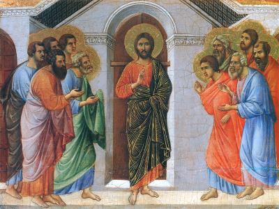

HODIE /  III Domenica di Pasqua
III Domenica di Pasqua
ANTIFONA / Acclamate Dio, voi tutti della terra, cantate la gloria del suo nome, dategli gloria con la lode. Alleluia. (Sal 65,1-2)
CONFITEOR / Confesso a Dio onnipotente e a voi, fratelli e sorelle, che ho molto peccato in pensieri, parole, opere e omissioni, per mia colpa, mia colpa, mia grandissima colpa. E supplico la beata sempre vergine Maria, gli angeli, i santi e voi, fratelli e sorelle, di pregare per me il Signore Dio nostro. Dio onnipotente abbia misericordia di noi, perdoni i nostri peccati e ci conduca alla vita eterna. Signore Pietà, Cristo pietà.
GLORIA / Gloria a Dio nell'alto dei cieli e pace in terra agli uomini di buona volontà. Noi ti lodiamo, ti benediciamo, ti adoriamo, ti glorifichiamo, ti rendiamo grazie per la tua gloria immensa, Signore Dio, Re del cielo, Dio Padre onnipotente. Signore, figlio unigenito, Gesù Cristo, Signore Dio, Agnello di Dio, Figlio del Padre, tu che togli i peccati dal mondo abbi pietà di noi; tu che togli i peccati dal mondo, accogli la nostra supplica; tu che siedi alla destra del Padre, abbi pietà di noi. Perché tu solo il Santo, tu solo il Signore, tu solo l'Altissimo, Gesù Cristo, con lo Spirito Santo: nella gloria di Dio Padre. Amen.
COLLETTA / Esulti sempre il tuo popolo, o Dio, per la rinnovata giovinezza dello spirito, e come ora si allieta per la ritrovata dignità filiale, così attenda nella speranza il giorno glorioso della risurrezione. Per il nostro Signore Gesù Cristo, tuo Figlio, che è Dio, e vive e regna con te, nell'unità dello Spirito Santo, per tutti i secoli dei secoli. ♦ O Padre, che nella gloriosa morte del tuo Figlio hai posto il fondamento della riconciliazione e della pace, apri i nostri cuori all’intelligenza delle Scritture, perché diventiamo i testimoni dell’umanità nuova, pacificata nel tuo amore. Per il nostro Signore Gesù Cristo, tuo Figlio, che è Dio, e vive e regna con te, nell'unità dello Spirito Santo, per tutti i secoli dei secoli.
LETTURA1 / Avete ucciso l'autore della vita, ma Dio l'ha risuscitato dai morti / Dagli Atti degli Apostoli (At 3,13-15.17-19) / In quei giorni, Pietro disse al popolo: «Il Dio di Abramo, il Dio di Isacco, il Dio di Giacobbe, il Dio dei nostri padri ha glorificato il suo servo Gesù, che voi avete consegnato e rinnegato di fronte a Pilato, mentre egli aveva deciso di liberarlo; voi invece avete rinnegato il Santo e il Giusto, e avete chiesto che vi fosse graziato un assassino. Avete ucciso l'autore della vita, ma Dio l'ha risuscitato dai morti: noi ne siamo testimoni. Ora, fratelli, io so che voi avete agito per ignoranza, come pure i vostri capi. Ma Dio ha così compiuto ciò che aveva preannunciato per bocca di tutti i profeti, che cioè il suo Cristo doveva soffrire. Convertitevi dunque e cambiate vita, perché siano cancellati i vostri peccati». / Parola di Dio.
PSALMUS / (Sal 4) Risplenda su di noi, Signore, la luce del tuo volto / Quando t'invoco, rispondimi, Dio della mia giustizia! Nell'angoscia mi hai dato sollievo; pietà di me, ascolta la mia preghiera. R. / Sappiatelo: il Signore fa prodigi per il suo fedele; il Signore mi ascolta quando lo invoco. R. / Molti dicono: «Chi ci farà vedere il bene, se da noi, Signore, è fuggita la luce del tuo volto?». R. / In pace mi corico e subito mi addormento, perché tu solo, Signore, fiducioso mi fai riposare. R.
LETTURA2 / Gesù Cristo è vittima di espiazione per i nostri peccati e per quelli di tutto il mondo / Dalla prima lettera di san Giovanni apostolo (1Gv 2,1-5a) / Figlioli miei, vi scrivo queste cose perché non pecchiate; ma se qualcuno ha peccato, abbiamo un Paràclito presso il Padre: Gesù Cristo, il giusto. È lui la vittima di espiazione per i nostri peccati; non soltanto per i nostri, ma anche per quelli di tutto il mondo. Da questo sappiamo di averlo conosciuto: se osserviamo i suoi comandamenti. Chi dice: «Lo conosco», e non osserva i suoi comandamenti, è bugiardo e in lui non c'è la verità. Chi invece osserva la sua parola, in lui l'amore di Dio è veramente perfetto. / Parola di Dio.
ACCLAMATIO / Alleluia, alleluia / Signore Gesù, facci comprendere le Scritture; arde il nostro cuore mentre ci parli. (Lc 24,32) / Alleluia.
VANGELO / Così sta scritto: il Cristo patirà e risorgerà dai morti il terzo giorno / Dal Vangelo secondo Luca (Lc 24,35-48) / In quel tempo, [i due discepoli che erano ritornati da Èmmaus] narravano [agli Undici e a quelli che erano con loro] ciò che era accaduto lungo la via e come avevano riconosciuto [Gesù] nello spezzare il pane. Mentre essi parlavano di queste cose, Gesù in persona stette in mezzo a loro e disse: «Pace a voi!». Sconvolti e pieni di paura, credevano di vedere un fantasma. Ma egli disse loro: «Perché siete turbati, e perché sorgono dubbi nel vostro cuore? Guardate le mie mani e i miei piedi: sono proprio io! Toccatemi e guardate; un fantasma non ha carne e ossa, come vedete che io ho». Dicendo questo, mostrò loro le mani e i piedi. Ma poiché per la gioia non credevano ancora ed erano pieni di stupore, disse: «Avete qui qualche cosa da mangiare?». Gli offrirono una porzione di pesce arrostito; egli lo prese e lo mangiò davanti a loro. Poi disse: «Sono queste le parole che io vi dissi quando ero ancora con voi: bisogna che si compiano tutte le cose scritte su di me nella legge di Mosè, nei Profeti e nei Salmi». Allora aprì loro la mente per comprendere le Scritture e disse loro: «Così sta scritto: il Cristo patirà e risorgerà dai morti il terzo giorno, e nel suo nome saranno predicati a tutti i popoli la conversione e il perdono dei peccati, cominciando da Gerusalemme. Di questo voi siete testimoni». / Parola del Signore.
CREDO / Credo in un solo Dio, Padre onnipotente, creatore del cielo e della terra, di tutte le cose visibili e invisibili. Credo in un solo Signore, Gesù Cristo, unigenito Figlio di Dio, nato dal Padre prima di tutti i secoli: Dio da Dio, Luce da Luce, Dio vero da Dio vero, generato, non creato, della stessa sostanza del Padre; per mezzo di lui tutte le cose sono state create. Per noi uomini e per la nostra salvezza discese dal cielo, e per opera dello Spirito Santo si è incarnato nel seno della Vergine Maria e si è fatto uomo. Fu crocifisso per noi sotto Ponzio Pilato, morì e fu sepolto. Il terzo giorno è risuscitato, secondo le Scritture, è salito al cielo, siede alla destra del Padre. E di nuovo verrà, nella gloria, per giudicare i vivi e i morti, e il suo regno non avrà fine. Credo nello Spirito Santo, che è Signore e dà la vita, e procede dal Padre e dal Figlio. Con il Padre e il Figlio è adorato e glorificato, e ha parlato per mezzo dei profeti. Credo la Chiesa, una santa cattolica e apostolica. Professo un solo battesimo per il perdono dei peccati. Aspetto la risurrezione dei morti e la vita del mondo che verrà. Amen.
OREMUS / Come i discepoli di Emmaus, anche noi apriamo il nostro cuore al Signore perché aumenti la nostra fede e ci faccia comprendere il mistero della salvezza. Preghiamo insieme e diciamo: Resta con noi, Signore! / Quando il nostro cuore non riconosce le tracce della tua presenza negli avvenimenti della storia, ti preghiamo. / Quando smarriamo il sentiero della vita e ci allontaniamo dalla tua Parola, ti preghiamo. / Quando la durezza del nostro cuore non ci permette di comprendere il significato profondo delle Scritture, ti preghiamo. / Quando diciamo di essere cristiani, ma non abbiamo la forza di osservare i tuoi comandamenti, ti preghiamo. / Quando vediamo il dolore nel cuore delle persone che ci sono accanto, ma non sappiamo trovare le parole per far cambiare la tristezza in gioia, ti preghiamo. / Quando non sappiamo riconoscere la presenza del Signore risorto nella sua Chiesa pellegrina sulla terra, ti preghiamo. / Apri il nostro cuore, Signore, alla comprensione della tua Parola e trasforma la nostra tristezza nella speranza certa della tua presenza in mezzo a noi. Tu che vivi e regni nei secoli dei secoli.
OFFERTORIO / Accogli, o Signore, i doni della tua Chiesa in festa e poiché le hai dato il motivo di tanta gioia, donale anche il frutto di una perenne letizia. Per Cristo nostro Signore.
PREFAZIO / Cristo vive per sempre e intercede per noi / È veramente cosa buona e giusta, nostro dovere e fonte di salvezza, proclamare sempre la tua gloria, o Signore, e soprattutto esaltarti in questo tempo nel quale Cristo, nostra Pasqua, si è immolato. Egli continua a offrirsi per noi e intercede come nostro avvocato; immolato sulla croce, più non muore, e con i segni della passione vive immortale. Per questo mistero, nella pienezza della gioia pasquale, l’umanità esulta su tutta la terra e le schiere degli angeli e dei santi cantano senza fine l’inno della tua gloria: Santo, Santo, Santo il Signore Dio dell’universo. I cieli e la terra sono pieni della tua gloria. Osanna nell’alto dei cieli. Benedetto colui che viene nel nome del Signore. Osanna nell’alto dei cieli.
COMMUNIO / Cristo doveva patire e risorgere dai morti il terzo giorno; nel suo nome saranno predicati a tutti i popoli la conversione e il perdono dei peccati. Alleluia. (Lc 24,46-47)

GRATIAS / Guarda con bontà, o Signore, il tuo popolo che ti sei degnato di rinnovare con questi sacramenti di vita eterna, e donagli di giungere alla risurrezione incorruttibile del corpo, destinato alla gloria. Per Cristo nostro Signore.
LECTIO
EVANGELIZO1 /
EVANGELIZO2 /
EVANGELIZO-21 / San Gregorio Magno (ca 540-604) papa, dottore della Chiesa / Omelie sui vangeli, n°26; PL 76,1197 / «Sono proprio io! Toccatemi» / Come può essere reale il corpo del Signore, dopo la risurrezione, dal momento che ha il potere di attraversare le porte chiuse? Ma bisogna sapere che le opere di Dio non sarebbero più mirabili se fossero comprensibili dalla nostra mente; né si ha il merito della fede quando la ragione umana fornisce le prove. Dobbiamo considerare alla luce di tutta l'opera del Redentore quelle azioni che per se stesse non si possono comprendere, affinché i mirabili fatti della sua vita offrano argomento di fede a quanto ci appare più sorprendente. Infatti il corpo del Signore che entrò nel cenacolo a porte chiuse era quello stesso che al momento della sua nascita uscì agli occhi degli uomini dal grembo intatto della Vergine. Perché dunque meravigliarsi se, dopo la risurrezione, entrava a porte chiuse già vincitore in eterno, egli che era uscito dal seno intatto della Vergine quando era venuto per morire? Ma poiché la fede di coloro che contemplavano il suo corpo era titubante, subito mostrò loro le mani e il fianco, e fece toccare quella carne che era passata attraverso le porte chiuse... Ora ciò che si può toccare si corrompe necessariamente e ciò che non si corrompe non si può toccare. Ma in modo meraviglioso e incomparabile, il nostro Redentore mostrò, dopo la risurrezione, il suo corpo incorruttibile ma palpabile, affinché l'incorruttibilità invitasse a conquistare il premio, e la possibilità di toccarlo fosse una conferma per la fede. Si mostrò incorruttibile e palpabile anche per dimostrare che il suo corpo, dopo la risurrezione, aveva la stessa natura, ma una diversa gloria.
DiBruno1 /
DiBruno2 /
DIBRUNO-21 / Aprì loro la mente per comprendere le Scritture (Lc 24,35-48) / Le Scritture sono state scritte dallo Spirito Santo per mezzo degli agiografi. Lo Spirito le ha rivelate e lo Spirito deve dare la comprensione e l’intelligenza di esse. Lo Spirito dona la comprensione direttamente, ma anche indirettamente per mezzo del corpo di Cristo che è la Chiesa. Ogni comprensione diretta va sempre verificata con la comprensione che viene dal corpo della Chiesa e in modo particolare da quanti sono i custodi della Parola e i suoi ministri. Ma anche custodi e ministri devono vivere sempre in comunione gerarchica: vescovi con il papa, presbiteri con i vescovi e ogni altro discepolo di Gesù sempre deve cercare la comunione con il presbitero e il vescovo. La non conoscenza delle Scritture è non conoscenza di Dio, non conoscenza di Cristo Gesù, non conoscenza dello Spirito Santo, non conoscenza dei misteri divini ed eterni dai quali sono per origine i misteri dell’uomo. Chi non conosce Dio, non si conosce.
Gesù dice ai Giudei che essi scrutano le Scritture, confidano in Mosè, ma non credono né nelle Scritture e né in Mosè: “Voi scrutate le Scritture, pensando di avere in esse la vita eterna: sono proprio esse che danno testimonianza di me. Ma voi non volete venire a me per avere vita. Non crediate che sarò io ad accusarvi davanti al Padre; vi è già chi vi accusa: Mosè, nel quale riponete la vostra speranza. Se infatti credeste a Mosè, credereste anche a me; perché egli ha scritto di me. Ma se non credete ai suoi scritti, come potrete credere alle mie parole?»” (Gv 5,39-40.45-47). Anche ai sadducei Gesù dice che essi non conoscono le Scritture: “Rispose loro Gesù: «Non è forse per questo che siete in errore, perché non conoscete le Scritture né la potenza di Dio? Quando risorgeranno dai morti, infatti, non prenderanno né moglie né marito, ma saranno come angeli nei cieli. Riguardo al fatto che i morti risorgono, non avete letto nel libro di Mosè, nel racconto del roveto, come Dio gli parlò dicendo: Io sono il Dio di Abramo, il Dio di Isacco e il Dio di Giacobbe? Non è Dio dei morti, ma dei viventi! Voi siete in grave errore»” (Cfr. Mc 12,18-27). Gli Apostoli conoscevano le Scritture? Neanche loro le conoscevano. Non conoscendo le Scritture non conoscono Cristo Gesù secondo pienezza e purezza di verità. La conoscenza delle Scritture urge sempre. Un giorno senza la conoscenza delle Scritture è un giorno senza verità. / In quel tempo, [i due discepoli che erano ritornati da Èmmaus] narravano [agli Undici e a quelli che erano con loro] ciò che era accaduto lungo la via e come avevano riconosciuto [Gesù] nello spezzare il pane. Mentre essi parlavano di queste cose, Gesù in persona stette in mezzo a loro e disse: «Pace a voi!». Sconvolti e pieni di paura, credevano di vedere un fantasma. Ma egli disse loro: «Perché siete turbati, e perché sorgono dubbi nel vostro cuore? Guardate le mie mani e i miei piedi: sono proprio io! Toccatemi e guardate; un fantasma non ha carne e ossa, come vedete che io ho». Dicendo questo, mostrò loro le mani e i piedi. Ma poiché per la gioia non credevano ancora ed erano pieni di stupore, disse: «Avete qui qualche cosa da mangiare?». Gli offrirono una porzione di pesce arrostito; egli lo prese e lo mangiò davanti a loro. Poi disse: «Sono queste le parole che io vi dissi quando ero ancora con voi: bisogna che si compiano tutte le cose scritte su di me nella legge di Mosè, nei Profeti e nei Salmi». Allora aprì loro la mente per comprendere le Scritture e disse loro: «Così sta scritto: il Cristo patirà e risorgerà dai morti il terzo giorno, e nel suo nome saranno predicati a tutti i popoli la conversione e il perdono dei peccati, cominciando da Gerusalemme. Di questo voi siete testimoni». / Basta la conoscenza delle Scritture perché sorga nei cuori la vera fede in Cristo Gesù? Predicare il vero Cristo non basta. È necessario che il Cristo invisibile sia reso manifesto dal Cristo visibile, che è il cristiano, che è vero corpo di Gesù Signore. Il cristiano conosce le Scritture, conosce il vero Cristo e l’annunzia aggiungendo sempre però la visibilità del vero Cristo che vive in lui e per lui si rende manifesto. Senza queste due vie che sono una sola via nel discepolo di Gesù, mai potrà sorgere nei cuori la vera fede in Gesù Signore. Si intravede qualcosa, ma non si vede Cristo. / Madre della Redenzione, Angeli, Santi, fate che il cristiano manifesti il vero Cristo.
SILVESTRINI-21 / Di questo voi siete testimoni... del mistero di Cristo, morto e risorto. Testimoni... da allora ad oggi. Siamo oggi a due settimane dalla Pasqua e le letture, la Parola di Dio risentono ancora del clima di festa, del clima di gioia pasquale per la risurrezione di Gesù. Luca nella prima lettura dagli Atti degli Apostoli ci racconta di Pietro che dopo la discesa dello Spirito Santo non ha più paura. Prima le porte del Cenacolo erano serate, chiuse per paura, oggi Pietro esce dal Cenacolo, comincia a predicare, comincia a dare testimonianza, e con parole dure contro i giudei, contro i farisei... «Voi avete ucciso l'autore della vita!» E Pietro sottolinea un paradosso: Pilato, un pagano, mosso da un senso innato di rettitudine, di giustizia, si è adoperato fino alla fine per liberare Gesù, per preservarlo dalla condanna a morte. Invece i capi del popolo eletto lo hanno crocifisso. Ma Pietro continua a parlare, senza paura, senza timore. E alcuni credono, si convertono. Chiedono: «che cosa dobbiamo fare? Come riparare il peccato?» «Pentitevi, pentitevi e cambiate vita». Anche a noi, oggi risuonano queste stesse parole di Pietro. Noi siamo presenti, per mezzo della liturgia a quell'evento. A noi oggi, come allora, san Pietro dice: «pentitevi e cambiate vita». E forse non si tratta solo della confessione, non si tratta di un semplice pentimento. Si tratta del cambiar vita, del cambiare le nostre visioni, i nostri ideali, le nostre strade... per sostituire le nostre con quelle di Cristo. Non è una cosa semplice e non è immediata. È un processo che ha un inizio, che parte, inizia, per non finire più, se non in Dio. Perché quanto più ci avviciniamo al Signore, quanto più gli siamo vicini, tanto più ci accorgiamo quanta strada abbiamo ancora davanti, quanto abbiamo ancora da camminare... Nel Vangelo invece vediamo Gesù che accompagna nel Cenacolo i suoi, Gesù è in mezzo ai suoi discepoli. Cristo non ci lascia soli come non ha lasciato soli gli apostoli. Dopo la sua risurrezione appare loro molte volte. Nei quaranta giorni tra la Pasqua e l'Ascensione continua ad essere con loro. Parla con loro, mangia, rimprovera la loro incredulità, risolve i dubbi... Tutto questo per rafforzare la loro fede, tutto questo per rinsaldarli, rènderli più convinti. Fare di loro missionari, testimoni. E il Vangelo si conclude proprio così: «Di questo voi siete testimoni». Testimoni della morte, della risurrezione, dell'amore, testimoni e servitori del Vangelo di Cristo. Questo è il compito che Gesù lascia ai discepoli, lo lascia a tutti coloro che lo vogliono seguire. Alla fine della messa noi usciamo di Chiesa, torniamo alle nostre case, ai nostri impegni, ma dobbiamo uscire da qui cambiati, trasformati dall'incontro con Cristo, diversi, come i discepoli di Emmaus, che, senza guardare che era notte, senza guardare la fatica del ritorno, senz'indugio tornano a Gerusalemme per annunziare la buona novella. Che cosa impariamo oggi, che cosa ci insegna la Liturgia della parola... La prima cosa, credo, dovrebbe essere proprio quella dell'ammonimento di Pietro: Pentitevi e cambiate vita. A questo Gesù aggiunge: siate i miei testimoni. Ed è proprio questo che ci chiede oggi il Signore, di essere suoi testimoni, testimoni che la vita ha un senso, che la vita ha un fine, uno scopo, una direzione precisa che è Cristo Gesù. Non è vero che il male è più forte del bene, non è vero che la morte è la fine di tutto, non è vero che la vita non ha senso... Noi siamo testimoni del bene, della vita senza fine, siamo qui per guadagnarcela. Se cerchiamo con tutte le forze di essere suoi testimoni, testimoni del suo amore che egli riversa nei nostri cuori, quell'amore sarà in noi veramente perfetto e la sua pace, la pace che egli ci dona, dimorerà in noi. La Madre del nostro Maestro ci aiuti in questo.
LOYOLA1 /
LOYOLA2 /
LOYOLA-21 / commento
Felice corsa di ritorno da Emmaus. Felice tristezza che ci ha donato di incontrarlo lungo la via. Felice il cuore che riconosce di battere e bruciare di un fuoco nuovo. Gli undici e gli altri con loro non possono arrestare il racconto dei due che si erano allontanati. Realtà indigeribile: la sua presenza viva tra noi. Non come un’idea. Non come una suggestione. Non solo come una narrazione. C’è proprio il suo corpo in carne ed ossa. La sua voce fa delle nostre solitudini e paure un “noi”. Ci raccoglie in un corpo che respira al ritmo della sua brezza, la pace. Visto che non riusciamo a mandarla giù, lui dà l’esempio. Ancora una volta si rivela un mangione, amico di noi peccatori. Testimoni della novità, cominciando da qui, per tutti. Il sogno pazzesco del risorto non ci è ancora del tutto chiaro. Ma entrando nella nube della scrittura sentiremo che il Figlio amato ci mette in dialogo con Mosè, con Elia e i profeti. Si parla di lui a vesti bianche. Sentiamo l’urgenza gioiosa di vivere trasfigurati dalla sua Pasqua. / Ricordo una corsa felice. Quand’è l’ultima volta che ho portato o ricevuto una buona notizia? (ma buona davvero!) Il risorto mostra le sue mani e i suoi piedi, mi invita a toccare e mangiare. A credere a ciò che vedo. Cosa provo? Come posso, iniziando proprio da qui e ora, cominciare a vivere da figlio della pace, testimone della risurrezione? (Matteo Suffritti SJ)
FEGF1 / Alle sorgenti della vita di Giovanni Paolo II / I discepoli testimoniano con franchezza la Pasqua di Cristo e i frutti della salvezza portati dalla sua passione-morte-risurrezione: Pietro annuncia ai Giudei la risurrezione di Gesù, il Santo e il Giusto che essi hanno messo a morte, e li invita a pentirsi e cambiare vita «perché siano cancellati i loro peccati» (prima lettura); Giovanni ci assicura che Gesù è il nostro aiuto presso il Padre e ci salva dai nostri peccati perché egli stesso li ha espiati per tutti . Anche la realtà del peccato fa parte, così, del gioioso annuncio pasquale. È vero, infatti, che il peccato è rottura di comunione; ma è anche «via alla comunione», a condizione che ci riconosciamo peccatori e ci lasciamo perdonare (1 Gv 1,8-10), con piena fiducia nel nostro «avvocato presso il Padre»; dal suo sacrificio, dalla sua offerta eucaristica, noi riceviamo la forza di non peccare, di osservare la sua parola, di dimorare in lui. Si compie così per noi la rivelazione e la attuazione della misericordia del Padre che trova il suo vertice nel mistero pasquale celebrato nell'Eucaristia. «Nella sua risurrezione Cristo ha rivelato il Dio dell'amore misericordioso, proprio perché ha accettato la croce come via alla risurrezione. Ed è... Cristo, Figlio di Dio, che al termine — e in un certo senso, già oltre il termine — della sua missione messianica, rivela se stesso come fonte inesauribile della misericordia, del medesimo amore che, nella prospettiva ulteriore della storia della salvezza nella Chiesa, deve perennemente confermarsi più potente del peccato. Il Cristo pasquale è l'incarnazione definitiva della misericordia, il suo segno vivente: storico-salvifico ed insieme escatologico. Nel medesimo spirito la liturgia del tempo pasquale pone sulle nostre labbra le parole del salmo: "Canterò in eterno le misericordie del Signore"» (Dives in misericordia, 8).
FEGF2 / Pace a voi di Papa Paolo VI / Fermiamo la nostra attenzione sull’improvviso saluto, tre volte ripetuto nel medesimo contesto evangelico, di Gesù risorto, apparso ai suoi discepoli, raccolti e chiusi nel Cenacolo per paura dei Giudei; il saluto che doveva essere allora consueto, ma che nelle circostanze in cui è pronunciato acquista una pienezza stupefacente; lo ricordate, è questo: «Pace a voi!» Un saluto che era risuonato nel canto angelico del Natale (Lc 2, 14): «Pace in terra»; un saluto biblico, già preannunciato come promessa effettiva del regno messianico (Gv 14, 27), ma ora comunicato come una realtà che è inaugurata da quel primo nucleo di Chiesa nascente: la pace, la pace di Cristo vittorioso della morte e delle sue cause vicine e lontane, dei suoi effetti tremendi ed ignoti. Gesù risorto annuncia, anzi infonde la pace agli animi smarriti dei suoi discepoli. È la pace del Signore nel suo primo significato, quello personale, quello interiore, quello che S. Paolo iscrive nella lista dei frutti dello Spirito, dopo la carità e il gaudio, quasi confuso con essi (Ga 5, 22). Che cosa v’è di meglio per un uomo cosciente ed onesto? La pace della coscienza non è il migliore conforto che noi possiamo trovare in noi stessi? … La pace della coscienza è la prima autentica felicità. Essa aiuta ad essere forti nelle avversità; essa conserva la nobiltà e la libertà della persona umana nelle condizioni peggiori, in cui essa si può trovare; la pace della coscienza per di più rimane la fune di salvataggio, cioè la speranza, … quando la disperazione dovrebbe avere il sopravvento nel giudizio di sé. … È il primo dono fatto da Cristo risorto ai suoi, cioè il sacramento del perdono, un perdono che risuscita.
RosalbaManes / Testimoni / Non basta aver vissuto un incontro eccezionale, bisogna comunicarlo, raccontarlo. La vita, infatti, non è solo ciò che viviamo ma anche ciò che raccontiamo. Ridire un evento permette non solo di ricordarlo e custodirlo, fissandolo nella memoria del cuore, ma anche di riviverlo e consegnarlo ad altri che, raccontandolo a loro volta, possano mantenerlo “vivo” nel tempo. Noi amiamo raccontare per umanizzare il tempo e sfuggire così la precarietà della vita. Per questo la storia biblica è tutta una narrazione di salvezza che vede coinvolti tanti uomini e tante donne, in più tempi e in più luoghi. Cuore pulsante di questa narrazione è il racconto della Pasqua di Cristo, che diventa per i suoi discepoli l’annuncio urgente da comunicare al mondo per illuminarlo di senso, umanizzarlo e renderlo sensibile al dono della salvezza che in Gesù il Padre offre a ogni carne: «il Cristo patirà e risorgerà dai morti il terzo giorno, e nel suo nome saranno predicati a tutti i popoli la conversione e il perdono dei peccati, cominciando da Gerusalemme. Di questo voi siete testimoni» (Lc 24,46-48). Quello che i due di Emmaus narrano agli Undici e a quanti sono con loro è un racconto squisitamente pasquale, fatto da «testimoni» che descrivono un incontro ricco e trasformante, comprensivo del dialogo con un Gesù vivo e vivificante, fatto di indagine, scavo, ermeneutica delle Scritture e di un gesto, compiuto alla mensa, che apre gli occhi del cuore e accende il microcosmo interiore appiccando il fuoco della fede, che illumina i passi del cammino e scalda parole e decisioni sintonizzandole con il Risorto. Questo racconto è talmente accorato e appassionato da attirare la presenza di Gesù in persona: «narravano ciò che era accaduto lungo la via e come l’avevano riconosciuto nello spezzare il pane. Mentre essi parlavano di queste cose, Gesù in persona stette in mezzo a loro» (Lc 24,35-36). Questo racconto “performativo”, che comunica ciò che narra, non è altro che la memoria della comunità cristiana che nel raccontare soprattutto il gesto dello spezzare il pane sperimenta la concretezza e l’attualità della presenza del Risorto. Si tratta della memoria dei «testimoni» che scorgono nella storia il filo rosso dell’agire del Dio artefice di tutto ciò che esiste, un agire che ha radici lontane, che parte dall’alleanza con i patriarchi, si manifesta con forza nell’alleanza con Mosè, attraversa gli scritti profetici e sapienziali e arriva fino a Cristo che, invece di essere accolto come l’apice dei doni del Padre, viene consegnato, rinnegato ed eliminato: «voi… avete rinnegato il Santo e il Giusto e avete chiesto che vi fosse graziato un assassino. Avete ucciso l’autore della vita, ma Dio l’ha risuscitato dai morti: noi ne siamo testimoni» (At 3,14-15). I cultori della memoria pasquale che colgono l’unità di tutta la storia salvifica non sono proclamatori della morte di Gesù ma annunciatori della sua risurrezione, non sono investigatori sulle tracce di prove da mostrare ma «testimoni» di ciò che hanno ascoltato e visto, cioè una voce capace di scuoterli e un corpo con i segni del supplizio subìto: «Perché siete turbati, e perché sorgono dubbi nel vostro cuore? Guardate le mie mani e i miei piedi: sono proprio io! Toccatemi e guardate; un fantasma non ha carne e ossa, come vedete che io ho» (Lc 24,38-39). I «testimoni» non raccontano di un fantasma ma di un vivente che, mediante l’atto umanissimo del lasciarsi nutrire, dà prova di avere «carne e ossa» e che offre loro la chiave per accedere alla “settima stanza” delle Scritture: la passione e la risurrezione di Cristo che prende su di sé il dolore e il peccato dell’umanità per offrire a tutti una vita nuova, cioè redenta, salvata, giustificata. La gioiosa notizia che trasfigura la storia, infatti, sta proprio qui: «se qualcuno ha peccato, abbiamo un Paraclito presso il Padre: Gesù Cristo, il giusto. È lui la vittima di espiazione per i nostri peccati; non soltanto per i nostri, ma anche per quelli di tutto il mondo» (1Gv 2,1-2). Il Padre ci ha così tanto amati da non lasciarci soli a combattere il nostro peccato, ma ci ha inviato un Paraclito che ci difende da ogni parola di condanna, ci rende giusti con la sua giustizia, abilitandoci al suo stesso modo di esistenza: una vita fatta dono, dove si scorgono le orme della comunione con il Padre e con gli altri.
MichaelDavideSemeraro / Il tuo nome è Delicatezza, alleluia! / Si avverte nella voce di Pietro una forza particolare, forse mista a un bisogno profondo di farsi ascoltare non tanto per sentirsi ascoltato, ma perché a nessuno sfugga il grande dono che è stato fatto a tutti: «Dio ha così compiuto ciò che aveva preannunciato per bocca di tutti i profeti, che cioè il suo Cristo doveva soffrire» (At 3,18). Perché questa parola possa penetrare fino in fondo nel cuore dei suoi ascoltatori e aprirvi una breccia, l’apostolo premette all’annuncio una sorta di scusante che riguarda tutti: «io so che voi avete agito per ignoranza, come pure i vostri capi» (3,17). L’invito alla conversione viene preparato e seguito dall’annuncio di una radicale remissione di colpa, tanto che l’attenzione sembra spostarsi da un’eccessiva attenzione ai «peccati» (3,19) alla considerazione e accoglienza della fatica nel credere e nell’aprirsi ai doni pasquali. Possiamo ammirare in Pietro una grande delicatezza che viene non solo confermata, ma persino radicalizzata dall’altro apostolo che sembra volerci rassicurare ancora più generosamente: «ma se qualcuno ha peccato, abbiamo un Paraclito presso il Padre: Gesù Cristo, il giusto» (1Gv 2,1). Da chi mai gli apostoli hanno appreso tutta questa delicatezza se non dal Signore Gesù, non solo durante la loro esperienza discepolare, non solo davanti al mistero così toccante della sua passione, ma persino nelle manifestazioni del Risorto! Leggendo il Vangelo, che ci riporta ancora una volta alla sera di Pasqua, non possiamo che affermare: non solo Gesù è proprio Gesù e non un «fantasma» (Lc 24,39), ma è ancora di più Gesù e ha un grande desiderio di essere riconosciuto e accolto come tale. Se rileggiamo, riga dopo riga, il Vangelo, sentiamo di assistere a un trionfo della delicatezza del Signore Risorto che, invece di rimproverare i suoi discepoli, sembra abbia bisogno di farsi perdonare per il brutto momento che hanno dovuto passare. La prima parola è «Pace a voi!» (Lc 24,36). Con il dono della pace non si vuole far cadere nell’oblio il dramma pasquale, ben presente nelle «mani» e nei «piedi» feriti, ma si vuole celebrare la vittoria di un amore che ha saputo andare oltre e non si è lasciato imprigionare dall’odio, dal rifiuto, dall’incomprensione, dall’umiliazione. Sembra che il Signore Gesù protesti con i suoi: «Sono proprio io! Toccatemi e guardate» (24,39). Sì, è proprio Gesù quello che i discepoli ritrovano nel cenacolo, ed è ancora di più il loro Gesù che li ha conquistati con la sua delicatezza e ora li conferma suoi discepoli e amici con una delicatezza ancora più grande, perché infinitamente più sofferta. Ce lo ricorda con una certa gravità Giovanni: «È lui la vittima di espiazione per i nostri peccati; non soltanto per i nostri, ma anche per quelli di tutto il mondo» (1Gv 2,2). Questa consapevolezza, invece di farci sprofondare nella vergogna e in un senso di inadeguatezza, diventa motivo per sentire ancora di più quanto in noi «l’amore di Dio è veramente perfetto» (2,5). Il Signore ci chiede di essere suoi «testimoni» (Lc 24,48), di essere una interpretazione vivente «per comprendere le Scritture» (24,45). Comprendere il mistero pasquale attraverso una capacità ermeneutica che parte dalla vita e ritorna alla vita significa lasciare che la luce e la forza della risurrezione penetri e trasformi delicatamente tutta la nostra vita.
RobertoPasolini / Ma / Leggendo i racconti di apparizione del Risorto contempliamo quanto sia stato faticoso e liberante il cammino dei primi discepoli per diventare «testimoni» (At 3,15; Lc 24,48) lieti, convinti e convincenti del mistero pasquale. La risurrezione di Cristo, in cui è annunciata la possibile trasformazione della nostra umanità, appare nei vangeli come una notizia troppo grande per essere creduta e accolta da cuori ancora avvolti nelle tenebre della paura e soffocati dal senso di colpa. Il tempo di Pasqua è lo spazio in cui ai discepoli di ogni tempo viene affidata la responsabilità di aggiungere un’imprescindibile tessera al mosaico della propria identità, la realtà del Crocifisso risorto, l’«avversativa» di Dio capace di riscattare qualsiasi storia e di raddrizzare qualunque percorso: «Ora, fratelli, io so che voi avete agito per ignoranza, come pure i vostri capi. Ma Dio ha così compiuto ciò che aveva preannunciato per bocca di tutti i profeti» (At 3,17-18). L’apostolo Pietro è il punto di riferimento più solido e più valido, per osservare come si svolge il dinamismo di questo itinerario di guarigione interiore. Nel discorso di Pentecoste rivolto al popolo radunato a Gerusalemme per la festa, Pietro ricorre per ben due volte a quel verbo — «rinnegare» — che egli stesso ha ripetutamente coniugato durante la notte della passione di Cristo. La libertà di ripetere senza paura il nome del proprio fallimento, trasformandolo in un’occasione per chiamare gli altri alla grazia della conversione, non può che fondarsi sul dono incandescente della Pentecoste (cf. At 2,1-13), quando lo Spirito ha trasformato Pietro e i discepoli in peccatori perdonati, svuotando il loro cuore dal senso di colpa per colmarlo della sola gioia di essere salvati. Da questa esperienza di risurrezione nasce nella comunità dei credenti il grande annuncio pasquale, che giunge a tutte le genti come possibilità di rimettersi in cammino verso una vita più grande e più inclusiva: «Convertitevi dunque e cambiate vita, perché siano cancellati i vostri peccati» (At 3,19). La stessa speranza di cambiamento traspare dalla prima lettera di Giovanni, dove risulta evidente come il peccato sia ormai, per i discepoli del Risorto, una possibilità per rimanere uniti all’invincibile compassione del Padre: «Figlioli miei, vi scrivo queste cose perché non pecchiate; ma se qualcuno ha peccato, abbiamo un Paràclito presso il Padre: Gesù Cristo, il giusto» (1Gv 2,1). Se il dono della risurrezione si è presto tradotto come la capacità di vivere lontano dal peccato, non dobbiamo dimenticare che esso è stato fin da subito percepito anche come la grande opportunità di vivere ogni cosa — persino il peccato — uniti a Cristo. Chi, accogliendo il vangelo, entra nella nuova creazione, non è più costretto ad affrontare nulla da se stesso, nemmeno il ritorno nelle tenebre e la solitudine del peccato. Perché il «ma» di Dio è più forte e decisivo di qualunque fallimento possa ancora verificarsi nella nostra umanità. Nel cenacolo, dove i discepoli si trovano ancora chiusi nel grande timore di non sapere in che direzione rimettersi in cammino, «Gesù in persona» si presenta a loro per sorprenderli con un’inequivocabile parola di riconciliazione: «Pace a voi!» (Lc 24,36). Essi però sono «sconvolti e pieni di paura, credevano di vedere un fantasma» (24,37); allora Gesù stesso li interroga su questo punto: «Perché siete turbati, e perché sorgono dubbi nel vostro cuore?» (Lc 24,38). Quando poi il Signore decide di spostare il loro sguardo verso le sue piaghe, i discepoli sono improvvisamente riempiti di una grande gioia. Eppure, proprio questa esplosione emotiva diventa il principale ostacolo a una libera e spontanea adesione di fede. Serve un nuovo annuncio per aprire le menti all’intelligenza delle Scritture (24,44-47) e convincere i cuori di un fatto, ormai incancellabile: «Di questo voi siete testimoni» (24,48). Senza cancellare le pagine sbagliate della nostra vita, allo Spirito del Risorto basta aggiungere un «ma» per trasformare il canto della nostra rassegnazione in un annuncio libero, fiero e universale della Pasqua di Cristo: «È lui la vittima di espiazione per i nostri peccati; non soltanto per i nostri, ma anche per quelli di tutto il mondo» (1Gv 2,2).
HomilyVoice-21 / PRIMA LETTURA Ora, fratelli, io so che voi avete agito per ignoranza, come pure i vostri capi. Ma Dio ha così compiuto ciò che aveva preannunciato per bocca di tutti i profeti, che cioè il suo Cristo doveva soffrire. Convertitevi dunque e cambiate vita, perché siano cancellati i vostri peccati. Prima che Gesù risuscitasse, per i figli di Abramo che non avevano creduto in Lui, il peccato fatto contro Dio e contro il Suo Messa, viene scusato dagli Apostoli, allo stesso modo che lo scusa Gesù mentre è inchiodato sulla croce, prima di consegnare il suo spirito al Padre. Non credere in Cristo e peccare contro Cristo sono due cose assai differenti. Uno può anche non credere. Il non credere mai potrà giustificare la volontà e la decisione di mettere a morte Gesù senza che lui abbia commesso una qualche colpa. Questa distinzione va sempre fatta. Questa distinzione vale per ogni relazione tra un uomo e un altro uomo. Il non credere mai dovrà essere aggiunto alla calunnia, alla menzogna, alla falsità, all’insulto, alla denigrazione, alla derisione, ad ogni altra cosa finalizzata a fare del male sia fisico che morale. Il cristiano può anche non credere in una persona. Deve però rimanere sempre nel Vangelo. Spargere calunnie, specie in modo anonimo, infangare, volere la morte dell’altro, prima morte spirituale e poi morte fisica, mai potrà dirsi cristiano. Il male non può appartenere ad alcuna religione, sia essa cristiana o di qualsiasi altra natura. Il male sempre da ogni uomo deve essere dichiarato male. È perversione della natura e di conseguenza di ogni religione quando il male viene operato per ottenere un fine personale, che è sempre frutto del peccato che governa cuore e mente. Dobbiamo oggi confessare che molti cristiani stanno vivendo una religione degenerata frutto di una natura degenerata. Quando si vuole l’eliminazione spirituale e anche fisica dell’altro, è segno che la nostra natura è degenerata e con essa anche la religione che diciamo di vivere. I figli di Abramo dagli Apostoli vengono scusati per aver crocifisso Gesù. Questo peccato è perdonabile. Basta convertirsi. Chiedere umilmente perdono, credere in Cristo Gesù, lasciarsi battezzare e la pace con Dio, con Cristo, con se stessi, viene elargita dal Signore. Il peccato che mai sarà perdonato è il peccato contro lo Spirito Santo. Dopo che il Signore Dio ha accreditato Gesù risuscitandolo nel sepolcro, allora la non fede in Lui non è più scusabile. Si cade nel peccato contro lo Spirito Santo e questo peccato non è perdonato. Ecco le parole di Gesù: “Perciò io vi dico: qualunque peccato e bestemmia verrà perdonata agli uomini, ma la bestemmia contro lo Spirito non verrà perdonata. A chi parlerà contro il Figlio dell’uomo, sarà perdonato; ma a chi parlerà contro lo Spirito Santo, non sarà perdonato, né in questo mondo né in quello futuro” (Mt 12,31-32). Questa distinzione tra il peccato commesso prima dell’accreditamento e il peccato commesso dopo l’accreditamento va necessariamente fatta. Tra il primo peccato ed il secondo vi è un cambiamento di natura. Il primo è contro il Figlio dell’uomo. Il secondo è contro lo Spirito Santo. La stessa cosa vale anche in ambito ecclesiale. Dopo che l’autorità si pronuncia su una questione di ordine morale o spirituale, sempre in ambito della retta fede in Cristo Gesù, il peccato cambia di natura. Prima il peccato di non fede è contro la persona. Poi il peccato di non è fede è contro la stessa Chiesa. È cambiata la natura del peccato. Il peccato contro la persona è perdonabile. Il peccato contro la Chiesa rischia di trasformarsi in peccato contro lo Spirito Santo. L’Apostolo Giovanni nella sua prima lettera così ammaestra i discepoli del Signore: “Se uno vede il proprio fratello commettere un peccato che non conduce alla morte, preghi, e Dio gli darà la vita: a coloro, cioè, il cui peccato non conduce alla morte. C’è infatti un peccato che conduce alla morte; non dico di pregare riguardo a questo peccato. Ogni iniquità è peccato, ma c’è il peccato che non conduce alla morte. Sappiamo che chiunque è stato generato da Dio non pecca: chi è stato generato da Dio preserva se stesso e il Maligno non lo tocca. Noi sappiamo che siamo da Dio, mentre tutto il mondo sta in potere del Maligno. Sappiamo anche che il Figlio di Dio è venuto e ci ha dato l’intelligenza per conoscere il vero Dio. E noi siamo nel vero Dio, nel Figlio suo Gesù Cristo: egli è il vero Dio e la vita eterna. Figlioli, guardatevi dai falsi dèi! (1Gv 5,16-21). Urge pertanto prestare ogni attenzione perché dal peccato contro la persona non si passi al peccato contro la Chiesa. Quando si giunge al peccato contro la Chiesa, allora siamo un dirupo dal quale difficilmente si torna indietro qualora ci si dovesse ostinare a proseguire. Peccando contro la Chiesa molti si sono definitivamente persi. Dal peccato contro la Chiesa al peccato contro lo Spirito Santo il passo è breve. LEGGIAMO At 3,13-15.17-19 Il Dio di Abramo, il Dio di Isacco, il Dio di Giacobbe, il Dio dei nostri padri ha glorificato il suo servo Gesù, che voi avete consegnato e rinnegato di fronte a Pilato, mentre egli aveva deciso di liberarlo; voi invece avete rinnegato il Santo e il Giusto, e avete chiesto che vi fosse graziato un assassino. Avete ucciso l’autore della vita, ma Dio l’ha risuscitato dai morti: noi ne siamo testimoni. Ora, fratelli, io so che voi avete agito per ignoranza, come pure i vostri capi. Ma Dio ha così compiuto ciò che aveva preannunciato per bocca di tutti i profeti, che cioè il suo Cristo doveva soffrire. Convertitevi dunque e cambiate vita, perché siano cancellati i vostri peccati. Dopo l’accreditamento da parte di Dio del suo Figlio Unigenito con la sua gloriosa risurrezione e il pieno compimento di ogni sua profezia, oracolo, promessa, giuramento sul suo Cristo, non si deve più parlare di ignoranza. Appellarsi all’ignoranza non giustifica il male fatto, anche perché ci lascia nel non pentimento. Lo abbiamo già detto: peccare di non fede e peccare per cattiveria, malignità, malvagità, odio, disprezzo giungendo fino all’eliminazione fisica del Figlio di Dio, o del suo Messia non sono la stessa cosa. Molti figli di Abramo sono responsabili sia del male fisico e sia del male spirituale perpetrato contro Gesù Signore. Di questo male ci si deve pentire. A questo pentimento occorre la riparazione. Come si è fatto il male per non aver voluto credere ora si deve chiedere il perdono per mezzo della fede in Cristo Gesù. Il perdono infatti è dato solo per la fede nel nome di Gesù Signore. Il Padre solo Cristo Gesù ha costituito strumento di riconciliazione perché siano perdonati i nostri peccati. Dio solo in Cristo, per Cristo, con Cristo, per la fede in Lui, riconcilia con sé i peccatori. Oggi purtroppo questa purissima fede sta per essere cancellata dalle nostre verità di fede. Ma è giusto che la verità venga gridata al mondo: senza la fede in Cristo Gesù gli Apostoli non possono rimettere i peccati ed essi resteranno non rimessi. Il Padre ci perdona per Cristo, ci perdona in Cristo, ci perdona con Cristo. Senza questa verità creduta e professata, annunciata e insegnata non c’è vera fede. La nostra fede è falsa. Chi vuole che i suoi peccati vengono cancellati deve seguire la via stabilita da Dio. Questa è solo uno: Cristo Gesù, il Crocifisso che è il Risorto. Altri nomi non sono stati dati agli uomini. Dio mai perdonerà i peccati nel nome di altri uomini. Cristo Gesù è il solo nome. SECONDA LETTURA Da questo sappiamo di averlo conosciuto: se osserviamo i suoi comandamenti. Chi dice: «Lo conosco», e non osserva i suoi comandamenti, è bugiardo e in lui non c’è la verità. Chi invece osserva la sua parola, in lui l’amore di Dio è veramente perfetto. È giusto che si dica una parola chiara sulla fede. Essa è obbedienza ad ogni Parola che il Signore ha fatto risuonare a noi per mezzo dei suoi Profeti, per mezzo di Cristo Gesù, per mezzo degli suoi Apostoli ed Evangelisti. Parola affidata allo Spirito Santo perché la faccia risuonare nei nostri cuori e nella nostra mente nella pienezza della sua verità. Il risuono della verità contenuta nella Parola nella storia operato dallo Spirito Santo mediante il corpo di Cristo che è la Chiesa, armonicamente e gerarchicamente costituito, si chiama Sacra Tradizione. È poi sempre compito dello Spirito Santo vigilare affinché nella sua verità non si introduca nulla di impuro. Questa vigilanza lo Spirito Santo la esercita in via ordinaria attraverso il Magistero della Chiesa. In via straordinaria si può servire di ogni battezzato e cresimato. Ecco cosa insegna l’Apostolo Paolo ai Vescovi di Asia: “E ora, ecco, io so che non vedrete più il mio volto, voi tutti tra i quali sono passato annunciando il Regno. Per questo attesto solennemente oggi, davanti a voi, che io sono innocente del sangue di tutti, perché non mi sono sottratto al dovere di annunciarvi tutta la volontà di Dio. Vegliate su voi stessi e su tutto il gregge, in mezzo al quale lo Spirito Santo vi ha costituiti come custodi per essere pastori della Chiesa di Dio, che si è acquistata con il sangue del proprio Figlio. Io so che dopo la mia partenza verranno fra voi lupi rapaci, che non risparmieranno il gregge; perfino in mezzo a voi sorgeranno alcuni a parlare di cose perverse, per attirare i discepoli dietro di sé. Per questo vigilate, ricordando che per tre anni, notte e giorno, io non ho cessato, tra le lacrime, di ammonire ciascuno di voi. E ora vi affido a Dio e alla parola della sua grazia, che ha la potenza di edificare e di concedere l’eredità fra tutti quelli che da lui sono santificati (At 20,25-32). Allénati nella vera fede, perché l’esercizio fisico è utile a poco, mentre la vera fede è utile a tutto, portando con sé la promessa della vita presente e di quella futura. Questa parola è degna di fede e di essere accolta da tutti. Per questo infatti noi ci affatichiamo e combattiamo, perché abbiamo posto la nostra speranza nel Dio vivente, che è il salvatore di tutti gli uomini, ma soprattutto di quelli che credono. E tu prescrivi queste cose e inségnale. Nessuno disprezzi la tua giovane età, ma sii di esempio ai fedeli nel parlare, nel comportamento, nella carità, nella fede, nella purezza. In attesa del mio arrivo, dèdicati alla lettura, all’esortazione e all’insegnamento. Non trascurare il dono che è in te e che ti è stato conferito, mediante una parola profetica, con l’imposizione delle mani da parte dei presbìteri. Abbi cura di queste cose, dèdicati ad esse interamente, perché tutti vedano il tuo progresso. Vigila su te stesso e sul tuo insegnamento e sii perseverante: così facendo, salverai te stesso e quelli che ti ascoltano (1Tm 4,8-16). Lo Spirito Santo è dato perché ci conduca ad una obbedienza perfettissima alla Parola di Gesù Signore. Chi non cammina nello Spirito Santo, chi non cresce in Lui, chi lo Spirito non ravviva senza interruzione, sempre sarà conquistato dal pensiero del mondo ed ad esso obbedirà. LEGGIAMO 1Gv 2,1-5a Figlioli miei, vi scrivo queste cose perché non pecchiate; ma se qualcuno ha peccato, abbiamo un Paràclito presso il Padre: Gesù Cristo, il giusto. È lui la vittima di espiazione per i nostri peccati; non soltanto per i nostri, ma anche per quelli di tutto il mondo. Da questo sappiamo di averlo conosciuto: se osserviamo i suoi comandamenti. Chi dice: «Lo conosco», e non osserva i suoi comandamenti, è bugiardo e in lui non c’è la verità. Chi invece osserva la sua parola, in lui l’amore di Dio è veramente perfetto. Oggi una potentissima tentazione sta aggredendo la mente dei discepoli di Gesù. Questa potentissima tentazione ha un solo nome: separazione. Oggi si separa Cristo Gesù dal Padre e dallo Spirito Santo. Si separa Dio dal Padre del Signore nostro Gesù Cristo. Si separa la fede da Cristo Gesù. Si separa Cristo Gesù dalla sua Parola. Si separa Dio dalla sua rivelazione. Si separa la fede dall’obbedienza alla Parola. Si separa il Vangelo dalla Tradizione, dal Magistero, dalla grande teologia. Si separa il cristiano dall’osservanza dei comandamenti. La fede vera è perfetta unità e comunione di ogni elemento a voi rivelato dallo Spirito Santo per mezzo dei suoi strumenti. Ogni elemento che viene tolto dall’unità e dalla comunione rende impura la fede. Più elementi vengono tolti e più essa è impura. Oggi possiamo affermare che la fede è morta. Manca ad essa la piena e perfetta obbedienza alla Parola. La fede senza l’obbedienza alla Parola è morta. Era questo il grido dell’Apostolo Giacomo. Deve essere il grido di ogni discepolo di Gesù. LETTURA DEL VANGELO 18 APRILE – III DOMENICA DI PASQUA [B] Così sta scritto: il Cristo patirà e risorgerà dai morti il terzo giorno, e nel suo nome saranno predicati a tutti i popoli la conversione e il perdono dei peccati, cominciando da Gerusalemme. Di questo voi siete testimoni. La remissione dei peccati avviene per decreto eterno del Padre solo nel nome di Cristo Gesù, il Nazareno. Non è dato altro nome sotto il cielo. Ecco cosa insegna a noi sia l’Apostolo Pietro e sia l’Apostolo Paolo: Il giorno dopo si riunirono in Gerusalemme i loro capi, gli anziani e gli scribi, il sommo sacerdote Anna, Caifa, Giovanni, Alessandro e quanti appartenevano a famiglie di sommi sacerdoti. Li fecero comparire davanti a loro e si misero a interrogarli: «Con quale potere o in quale nome voi avete fatto questo?». Allora Pietro, colmato di Spirito Santo, disse loro: «Capi del popolo e anziani, visto che oggi veniamo interrogati sul beneficio recato a un uomo infermo, e cioè per mezzo di chi egli sia stato salvato, sia noto a tutti voi e a tutto il popolo d’Israele: nel nome di Gesù Cristo il Nazareno, che voi avete crocifisso e che Dio ha risuscitato dai morti, costui vi sta innanzi risanato. Questo Gesù è la pietra, che è stata scartata da voi, costruttori, e che è diventata la pietra d’angolo. In nessun altro c’è salvezza; non vi è infatti, sotto il cielo, altro nome dato agli uomini, nel quale è stabilito che noi siamo salvati» (At 4,5-12). L’amore del Cristo infatti ci possiede; e noi sappiamo bene che uno è morto per tutti, dunque tutti sono morti. Ed egli è morto per tutti, perché quelli che vivono non vivano più per se stessi, ma per colui che è morto e risorto per loro. Cosicché non guardiamo più nessuno alla maniera umana; se anche abbiamo conosciuto Cristo alla maniera umana, ora non lo conosciamo più così. Tanto che, se uno è in Cristo, è una nuova creatura; le cose vecchie sono passate; ecco, ne sono nate di nuove. Tutto questo però viene da Dio, che ci ha riconciliati con sé mediante Cristo e ha affidato a noi il ministero della riconciliazione. Era Dio infatti che riconciliava a sé il mondo in Cristo, non imputando agli uomini le loro colpe e affidando a noi la parola della riconciliazione. In nome di Cristo, dunque, siamo ambasciatori: per mezzo nostro è Dio stesso che esorta. Vi supplichiamo in nome di Cristo: lasciatevi riconciliare con Dio. Colui che non aveva conosciuto peccato, Dio lo fece peccato in nostro favore, perché in lui noi potessimo diventare giustizia di Dio (2Cor 5,14-21). Da chi deve essere invocato il nome di Gesù il Nazareno? Così rivela l’Apostolo Paolo: dal Giudeo prima e poi dal Greco. Perché se con la tua bocca proclamerai: «Gesù è il Signore!», e con il tuo cuore crederai che Dio lo ha risuscitato dai morti, sarai salvo. Con il cuore infatti si crede per ottenere la giustizia, e con la bocca si fa la professione di fede per avere la salvezza. Dice infatti la Scrittura: Chiunque crede in lui non sarà deluso. Poiché non c’è distinzione fra Giudeo e Greco, dato che lui stesso è il Signore di tutti, ricco verso tutti quelli che lo invocano. Infatti: Chiunque invocherà il nome del Signore sarà salvato. Ora, come invocheranno colui nel quale non hanno creduto? Come crederanno in colui del quale non hanno sentito parlare? Come ne sentiranno parlare senza qualcuno che lo annunci? E come lo annunceranno, se non sono stati inviati? Come sta scritto: Quanto sono belli i piedi di coloro che recano un lieto annuncio di bene! Ma non tutti hanno obbedito al Vangelo. Lo dice Isaia: Signore, chi ha creduto dopo averci ascoltato? Dunque, la fede viene dall’ascolto e l’ascolto riguarda la parola di Cristo (Rm 10,9-17). Si invoca il nome del Signore con fede perfetta nella sua verità. Chi è Gesù il Nazareno? È il Figlio Unigenito fattosi carne che il Padre ha dato al mondo perché credendo in Lui abbia la vita eterna. Gesù il Nazareno è il Crocifisso, il Risorto, l’Asceso al Cielo che siede in eterno alla destra del Padre e intercede per ottenere il dono della conversione e della vita. A chi Gesù offre la grazia della sua redenzione o della sua espiazione vicaria? Prima di tutto ai figli del suo popolo, poi ai figli di ogni altro popolo. Gli Apostoli devono iniziare da Gerusalemme e poi potranno recarsi presso ogni altro popolo. Dio mai viene meno alle sue promesse. Ma anche, Dio mai viene meno alla sua Parola. Ogni nazione – compresa la nazione dei figli di Israele – se vuole essere benedetta, lo potrà solo se invocherà il nome di Gesù. Dove non c’è invocazione del nome di Gesù, non c’è perdono e non c’è remissione dei peccati. Ora i figli di Abramo si sono macchiati del grande peccato della crocifissione del loro Messia e Signore. Gesù sulla croce ha già chiesto perdono per questo grave peccato. Anche i pagani si sono macchiati dello stesso peccato. Anche per essi Gesù ha chiesto perdono al Padre. Ma il perdono chiesto da Cristo Gesù al Padre diviene remissione del peccato solo con la fede in Lui. Per questo sia i figli di Abramo e sia i figli delle genti dovranno confessare il nome di Gesù. Si predica il perdono nel nome di Gesù. Ci si converte. Si crede nel nome di Gesù. Si chiede perdono. Il perdono è sigillato nel sacramento del Battesimo. È questa la via stabilita dal Signore nostro Dio. LEGGIAMO IL TESTO DI Lc 24,35-48 Ed essi narravano ciò che era accaduto lungo la via e come l’avevano riconosciuto nello spezzare il pane. Mentre essi parlavano di queste cose, Gesù in persona stette in mezzo a loro e disse: «Pace a voi!». Sconvolti e pieni di paura, credevano di vedere un fantasma. Ma egli disse loro: «Perché siete turbati, e perché sorgono dubbi nel vostro cuore? Guardate le mie mani e i miei piedi: sono proprio io! Toccatemi e guardate; un fantasma non ha carne e ossa, come vedete che io ho». Dicendo questo, mostrò loro le mani e i piedi. Ma poiché per la gioia non credevano ancora ed erano pieni di stupore, disse: «Avete qui qualche cosa da mangiare?». Gli offrirono una porzione di pesce arrostito; egli lo prese e lo mangiò davanti a loro. Poi disse: «Sono queste le parole che io vi dissi quando ero ancora con voi: bisogna che si compiano tutte le cose scritte su di me nella legge di Mosè, nei Profeti e nei Salmi». Allora aprì loro la mente per comprendere le Scritture e disse loro: «Così sta scritto: il Cristo patirà e risorgerà dai morti il terzo giorno, e nel suo nome saranno predicati a tutti i popoli la conversione e il perdono dei peccati, cominciando da Gerusalemme. Di questo voi siete testimoni. Oggi un uragano distruttore sembra essersi abbattuto sulla ricchezza e bellezza della nostra purissima fede in Cristo Gesù. Tutto è stato raso al suolo. È come se Dio mai avesse parlato. Lo Spirito Santo mai condotto alla verità. La Chiesa mai fosse esistita. In pochi anni questo uragano è riuscito a spazzare via ogni traccia della nostra purissima fede. Madre della Redenzione, ferma questo urgano che sta distruggendo la purissima fede nel Figlio tuo. Se tu non interverrai con tempestività, del Figlio tuo non resterà traccia nei nostri cuori. Per l’amore che porti per il Figlio tuo, fa’ che questo uragano si arresti. Non domani, ma oggi. Amen.
Backlinks:
QUOTIDIE